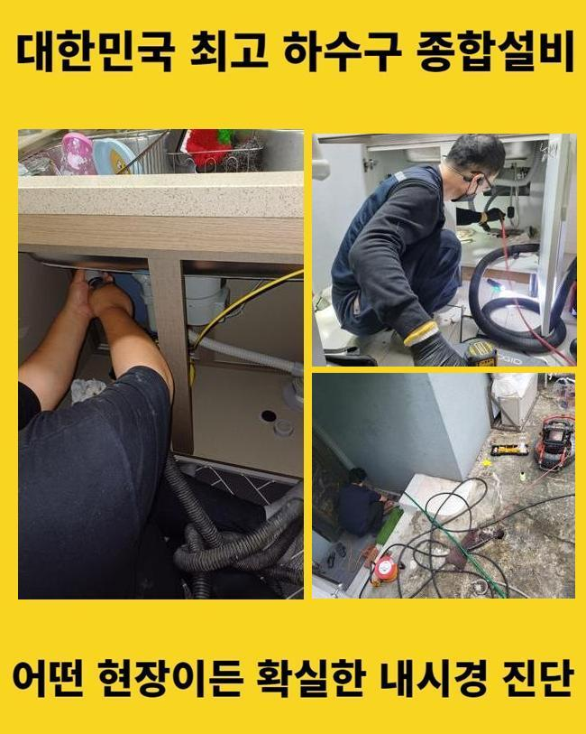
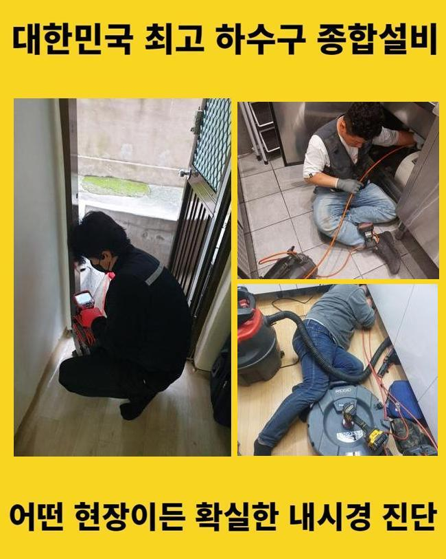
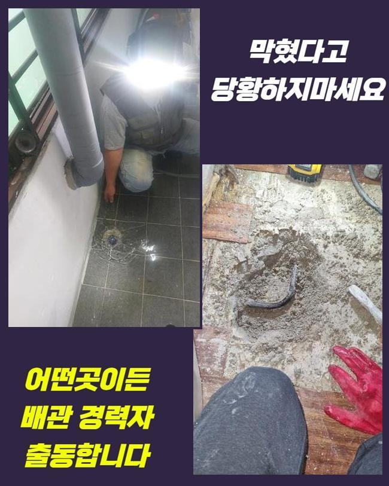
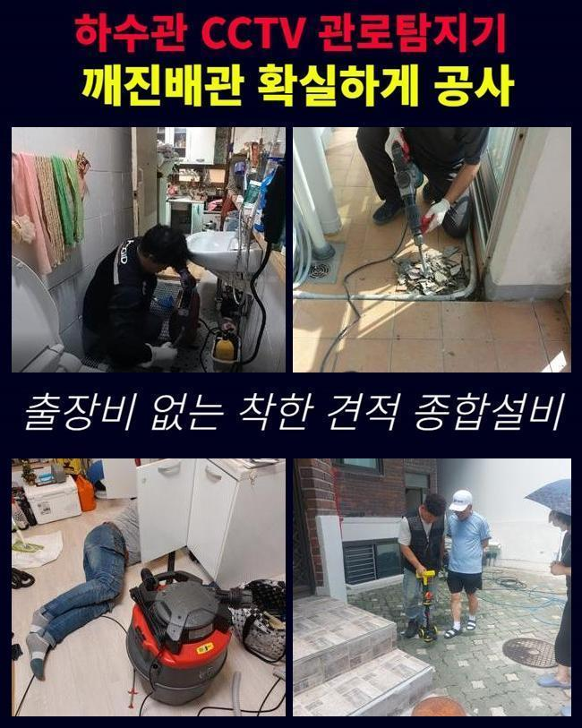
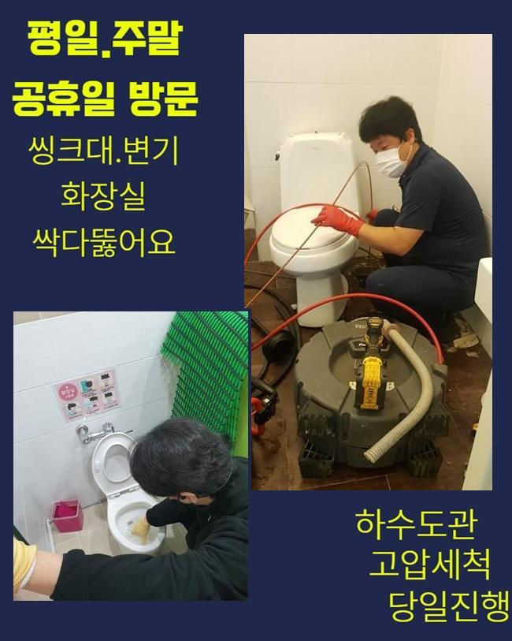
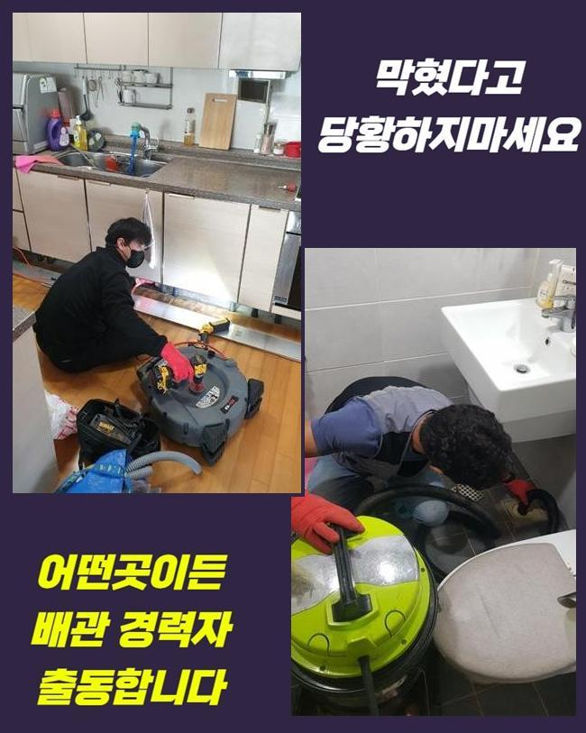

🏠 미추홀구 숭의동화장실뚫음 문학동 하수구뚫어주는곳 누수
용인 싱크대막힘 전문 시공 후기

📋 작업 개요
- 위치: 용인
- 서비스 유형: 싱크대막힘, 하수구막힘, 배관막힘, 누수수리, 뚫는업체, 배관청소, 악취차단
- 작업 일시: 2025. 5. 20. 20:20
- 업체명: 하수구수사대 (010-5615-2118)
🔍 문제 상황
미추홀구 숭의동화장실뚫음 문학동 하수구뚫어주는곳 누수
우리가 살다보면 물이 배수구로 잘 이동하지 못하는 하수배관 계통의 문제를를 감당해야 할 때가 있어요
욕실의 내부로 들어설 때마다 풍겨나오는 냄새를 체감하게 됩니다
이런 문제의 특징은 얼른 처리하지 않으면 평온한 하루 일상에 트러블을 만들게 됩니다
불편함은 기본이고 방치하게 될 때는 굉장한 손상을 촉발할 수 있어요
욕실은 하루에도 여러 차례 방문하는 장소인만큼 사태는 굉장한 고충을 안겨줍니다
욕실이 꽉 막힌 문제의 수선을 하기 위하여 접수를 해주신 작업지로 내방을 드렸습니다
하수구의 신속한 정비가 핵심인 이유가 뭐냐면 하수관이 막힌 후 한참 지나게 된다면 더욱 까다로운 사안으로 진화할 수 있어서입니다
강력하게 막혀버리게 된다면 작업시간도 더욱 많이 있어야 하며 경제적인 부분까지 증폭될 수 있습니다
하수구 가운데가 막히면 물이 원만하게 내려가지 않기 때문에 물고임으로 습기가 생기고 이 상태가 지속된다면 불쾌한 악취 이슈도 일어나게 될 것입니다
살며시 확산되는 냄새는 곳곳에 퍼지게 되고 비위생적인 상황까지 유발할 가능성도 있으니 한시라도 바삐 움직여야 합니다
하수구로 인한 문제들은 장마철이라거나 한참동안이나 욕실을 이용하지 않았다면 확률적으로 더 자주 발현될 수 있겠습니다

🔎 원인 분석
💡 전문가 진단: 정밀 진단 장비를 사용하여 슬러지의 고착 여부를 판명하고 타격/세척 작업을 실시했습니다.
청소할 욕실에 들어서서 하수구 고장의 원인을 제대로 찾아내어 설비를 복원해 드리기로 정하고 테스트부터 시작했어요
욕실 바닥 쪽의 하수구 차단의 경우는 보통은 씻다가 발견하는 케이스가 많아요
평소랑은 다르게 물이 방출되지 못하고 바닥 부근에 지속적으로 고여가는 모습이 하수구문제를 알리는 증거입니다
여기는 단순막힘을 훌쩍 넘은 그리 쉽지만은 않은 문제인 듯 했습니다
막힘도 분명히 존재했는데 외에도 그 밖의 사안이 결합되어 발생되었더라고요
싱크대 개수대에서 물을 사용하면 물이 곧장 역방향으로 넘쳐흐르고 악취까지 영향을 미치는 상황이더라고요
원인을 추적해보면 하수구에 한가득 쌓인 이상물질도 당연 문제겠지만 낡고 마모된 배관도 원인으로 작용할 수 있어요
오늘 처리해야할 것은 관로를 뚫고난 후 하수구냄새도 마찬가지로 소멸시키는 것이었네요
먼저 하수구의 내부의 상황을 샅샅이 관찰하고 배관 물길이 사라진 문제의 배경을 살펴봤습니다
하수구 심층부의 상황을 하나하나 살펴보는 탐색 과정을 선행하여 적용하고 있습니다
상황에 잘 맞는 청소 방식을 고르고 다음은 힘있는 장비를 택해서 청소를 다 끝냈고 물이 쾌적하게 아래로 향했습니다
배관을 닦아내는 작업은 깨끗한 환경을 만들고 향후 겪게될 수 있는 사태를 방어하는 사전작업이기도 해요
여태껏 겪어오신 문제는 하수배관 계통의 문제를에서 물이 솟구쳐 오르며 이에 따른 심한 이에 따른 냄새도 유발되는 상황이었습니다

🔧 작업 과정
배수관의 내부가 오염되었을 때 보여지는 현상이며 내버려두면 더 악화될 뿐 시간에 따라 사라지지 않습니다
물이 오래 고여있다고 하수구 경로가 열리는 상황은 거의 없고 수돗물을 쏟아낸다 해도 결과는 같을 것입니다
이어지는 긴 배수관을 점검하고 막힌 부위와 원인부를 파악하기 위해 세면대의 배출구로 관찰 장비를 들여보내서 상태를 평가해 봤습니다
이 장비를 활용하면 깊은 구역까지 탐방을 해주기에 올바른 진단 과정에서 꼭 필요한 도구입니다
진단을 이어가다 보니 고정되어 있던 이물질들이 눈에 들어왔고 이 대상이 폐수를 거꾸로 새게 한 주범이라는 점을 파악하게 됐습니다
통수를 확보하기 위하여 우선은 막힌 곳을 잡아낸 후 석션을 넣어 안에 고인 침전물의 집합체를 치우는 절차로 옮겨갔습니다
습식청소기인 석션기는 빨아당기는 힘을 가진 장치로 가볍게 막힌 케이스를 다룰 때는 석션을 단독으로 사용해도 나아지기도 합니다
윗부분에 정체한 이물질을 남김 없이 없어지도록 해주어야 본작업이 가능할거라 결론이 나왔습니다
석션기를 통한 흡수를 반복적으로 수행했지만 막혀있는 수준이 심각한 수준이었기에 석션의 단독수행으론 호전되기 힘들었던 겁니다
기름때와 각종 노폐물이 배수구 아래로 떠내려갔고 꼬여있는 라인에서 모여서 물기가 이동되지 못했던 것이었어요
부피가 커지다보니 배관이 틀어막혀서 결국 물이 치솟는 일까지 벌어졌던 것입니다
스케일링 작업을 지원하는 유연한 샤프트 기기를 하수관에 진입시켜서 물길이 트이게 하는 정화를 해나갔어요
진동력이 주는 파워를 사용해 노즐을 빠르게 돌리며 오물을 파쇄해주고 벽체를 긁어주는 기능을 갖고 있습니다
사슬 형태의 노커가 경화된 이물질을 조각을 내주는 역할을 맡습니다
내부가 맑아질 때까지 업무를 이어간 결과 새로 교체된 듯 활짝 열린 배수구를 얻을 수 있었어요
하수구 청소 단계를 모두 마무리하고서 추가적인 이상은 없는지 점검하는 테스트 역시 실시하여 완성도를 높입니다
완전하게 깨끗해진 배관의 컨디션을 보고자 카메라를 내려보내서 달라진 내부를 봐줬습니다
배수관이 전과는 다르게 깔끔한 모습으로 회복됐음을 인지할 수 있었습니다
하수구냄새도 얼만큼 나아졌는지를 체크해드려야 해서 냄새감지기를 켜서 검사를 해봤어요
확실히 줄어들었지만 미미한 악취가 감지되었기에 하수구 위에 트랩을 세팅해 주었습니다


✅ 작업 완료
샤워하다가 문득 물흐름이 굼떠지면 트랩을 해체시켜서 덕지덕지 접착된 이물질을 제거하고 사용하면 됩니다
트랩이 필요하시다면 배수구 폭을 잰 후 트랩을 주문하셔서 설치를 해주시면 됩니다
문득 발생하는 하수관 트러블을 겪게 될 때 많은 고객분들은 클리너를 부어서 물길을 내려고 진땀을 빼기도 합니다
자가조치를 통해서 흐름을 되돌리는 건 확률상으로 어려운 문제이니 업체의 도움을 받는 게 베스트입니다
재발이 일어나지 않도록 구석구석 살펴보면서 배수구 청결 관리를 전담해 드리니 편하게 연락주세요




⚠️ 베란다 누수 및 방수 관리 방법
- ✅ 비가 많이 올 때 창틀 주변이나 아래층 천장에 얼룩이 생기는지 정기적으로 확인해 보세요.
- ✅ 우수관 주변 실리콘 마감이 들뜨거나 깨진 틈새가 있는지 손상 여부를 수시로 체크하세요.
- ✅ 베란다 바닥 타일의 줄눈(메지)이 소실되면 그 틈으로 물이 침투하여 누수가 유발됩니다.
- ✅ 누수 의심 증상 발견 시 방치하면 아래층 손실이 커지므로 즉시 전문가의 진단을 받으십시오.
💡 핵심 정리
- 확실한 장비 작업(내시경 점검 및 샤프트 스케일링)으로 원인을 뿌리 뽑습니다.
- 작업 후 1년 이내에 동일한 부위 재발 시 100% 무상 A/S 서비스를 보장합니다.
- 서울 · 경기 · 인천 전 지역에 24시간 언제든 긴급 출동할 수 있도록 항시 대기 중입니다.
❓ 자주 묻는 질문 (FAQ)
🚨 용인 싱크대막힘 문제로 고민이신가요?
정확한 원인 진단과 확실한 시공으로 재발 없는 해결을 약속드립니다.
24시간 긴급 출동 | 서울 · 경기 · 인천 전지역 | 1년 내 재발 시 무상 A/S